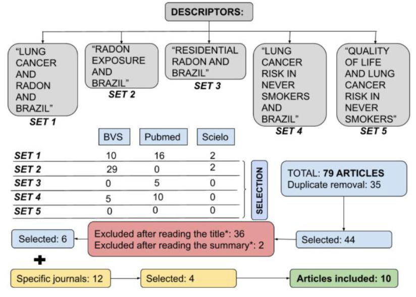

Lung Cancer related to radon gas exposure: an integrative review

Resumo em Português
O câncer de pulmão é a principal causa de mortes relacionadas ao câncer no Brasil e no mundo. Os principais fatores de risco associados à doença são o tabagismo e a exposição ao gás radônio. Esta revisão integrativa tem como objetivo levantar estudos epidemiológicos sobre câncer de pulmão relacionado à exposição ao radônio, particularmente em não fumantes, publicados no Brasil nos últimos 10 anos. A busca foi realizada nas bases de dados PubMed, BVS e SciELO para artigos publicados entre 2012 e 2022, utilizando os operadores booleanos "AND" e "OR" e os descritores: "RADON EXPOSURE AND BRAZIL"; "LUNG CANCER AND RADON AND BRAZIL"; "LUNG CANCER RISK IN NEVER SMOKERS AND BRAZIL"; "RESIDENTIAL RADON AND BRAZIL"; "QUALITY OF LIFE AND LUNG CANCER RISK IN NEVER SMOKERS"; nos idiomas inglês, espanhol e português.A busca retornou 79 artigos, com 35 duplicatas. Dos 44 restantes, 38 foram excluídos por não atenderem aos objetivos da pesquisa, restando 6 artigos para discussão. Quatro artigos de periódicos especializados nas áreas de radiação e geologia foram incluídos, totalizando 10 estudos discutidos neste trabalho. As bases de dados consultadas apresentaram número limitado de estudos medindo a concentração de radônio em ambientes internos em cidades brasileiras. Estudos realizados em regiões com altas concentrações de radônio são essenciais para a prevenção à saúde e o mapeamento de regiões de risco. Medidas como vedação de pisos, tetos e paredes, bem como melhor ventilação nas residências, podem auxiliar significativamente no controle da exposição ao radônio em ambientes fechados. Além disso, políticas públicas de monitoramento de regiões de alto risco devem ser implementadas para prevenir doenças relacionadas às emissões de radônio.